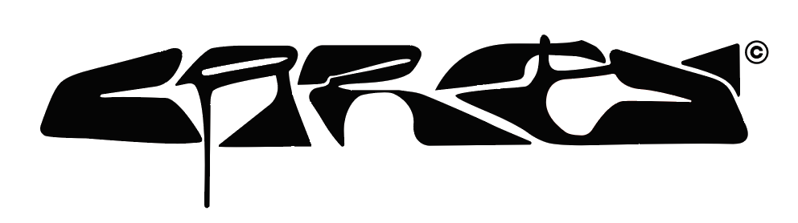
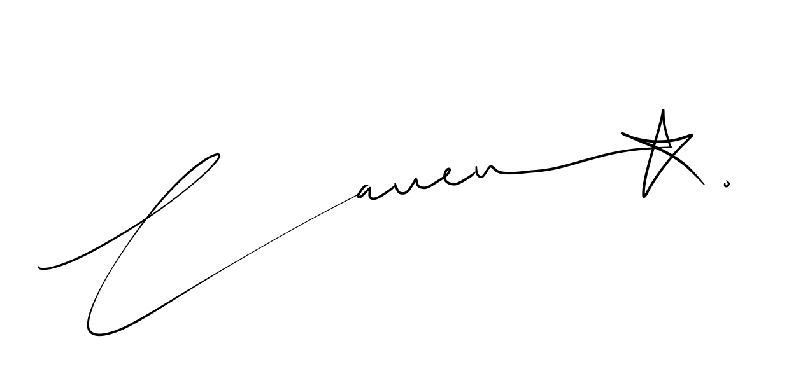

I studied fashion marketing at IED Florence — image, identity, the language of luxury. Then I got curious about the why behind all of it, so I did an AI & Data Science Bootcamp at IE Business School in Madrid.
My thesis was selected as best at Future for Fashion International in Florence — it was about consumer data-sharing and what that does to marketing strategy. That tension between feeling and evidence is where I actually work best.
Madrid, Florence, Mexico City. EU and Mexican citizenship. Three languages. I'm not trying to be a generalist — I'm trying to be precise in more than one dimension at once.